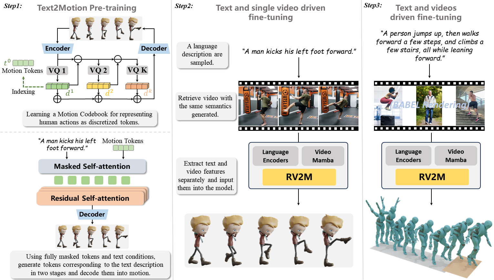

Abstract
Text-driven human motion generation models, propelled by advancements in generative transformers and diffusion models, exhibit remarkable capabilities. However, they still face considerable challenges due to a scarcity of motion capture data, leading to sub-optimal performance in responding to diverse, unconstrained prompts. In contrast, human activity videos are abundant on the Internet, surpass mocap data by orders of magnitude, yet remains under-utilized in motion generation. Drawing inspiration from the success of Retrieval Augmented Generation (RAG) in language modeling, this paper introduces a novel framework, RV2M, which integrates video retrieval into motion generation models to enhance their performance.Specifically, the framework incorporates a retrieval module designed to select reference videos from the Internet based on textual prompts. To address scenarios where no exact video match is found for a prompt, we propose a phrase-based retrieval and video composition scheme that maximizes the utilization of available video resources. Subsequently, we develop a video-conditioned autoregressive motion generator and formulate a training strategy that optimally leverages cross-modal data from videos to support the motion generation process.Extensive empirical evaluations reveal that our model outperforms existing state-of-the-art models across multiple metrics, and demonstrates robust adaptability to a wide range of expressions.
Method
In the first phase, we train a text-to-motion generation model using residual VQ-VAE and masked modeling. In the second phase, we select long textual prompts in the Human3D dataset, and retrieve corresponding videos, we only keep panoptic videos with high relevancy for training. We extract features from videos for condition and use the ground-truth motion in dataset for supervision we retrieve corresponding video descriptions via text, extracting video and text features separately to input into the model trained in the first step for generating human motions.